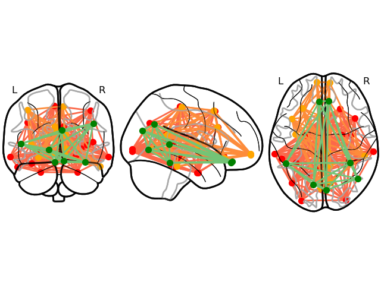

Note
Go to the end to download the full example code
Plot network communities¶
Plot Networkx Communities on a connectome plot.
Author: Praveen Sripad <pravsripad@gmail.com>
Reading labels from parcellation...
read 35 labels from /Users/praveen.sripad/nanna_data/mne_data/MNE-sample-data/subjects/fsaverage/label/lh.aparc.annot
read 34 labels from /Users/praveen.sripad/nanna_data/mne_data/MNE-sample-data/subjects/fsaverage/label/rh.aparc.annot
bankssts-rh
caudalanteriorcingulate-rh
caudalmiddlefrontal-rh
entorhinal-lh
entorhinal-rh
fusiform-lh
inferiorparietal-lh
inferiortemporal-lh
insula-rh
isthmuscingulate-lh
lateraloccipital-lh
lateraloccipital-rh
lateralorbitofrontal-rh
middletemporal-lh
middletemporal-rh
paracentral-lh
caudalanteriorcingulate-lh
caudalmiddlefrontal-lh
cuneus-lh
frontalpole-lh
frontalpole-rh
inferiortemporal-rh
insula-lh
isthmuscingulate-rh
lateralorbitofrontal-lh
lingual-rh
paracentral-rh
bankssts-lh
cuneus-rh
fusiform-rh
inferiorparietal-rh
lingual-lh
medialorbitofrontal-lh
medialorbitofrontal-rh
import os.path as op
import numpy as np
import matplotlib.pyplot as plt
import mne
from mne.datasets import sample
from jumeg.connectivity.con_utils import make_communities
from jumeg.connectivity import generate_random_connectivity_matrix
from nilearn import plotting
data_path = sample.data_path()
subjects_dir = op.join(data_path, 'subjects')
subject = 'fsaverage'
aparc = mne.read_labels_from_annot(subject, subjects_dir=subjects_dir,
parc='aparc')
# make a random connectivity matrix
con = generate_random_connectivity_matrix(size=(34, 34), symmetric=True)
top_nodes_list, n_communities = make_communities(con)
# FIXME better colouring
# cmaps_list = ['Pastel1', 'Pastel2', 'Paired', 'Accent',
# 'Dark2', 'Set1', 'Set2', 'Set3',
# 'tab10', 'tab20', 'tab20b', 'tab20c']
# color_list = plt.cm.Pastel1(np.linspace(0, 1, len(top_nodes_list)))
color_list = ['red', 'orange', 'green', 'purple', 'navy', 'blue']
cmaps_list = ['Reds', 'Oranges', 'Greens', 'Purples', 'PuBu', 'Blues']
fig = plt.figure(facecolor='w', edgecolor='w')
for top_nodes, col, cmap in zip(top_nodes_list, color_list, cmaps_list):
coords = []
community_ = [aparc[tp] for tp in top_nodes]
for lab in community_:
if lab.name == 'unknown-lh':
continue
print(lab.name)
# get the center of mass
com = lab.center_of_mass('fsaverage')
if lab.name.endswith('lh'):
# obtain mni coordinated to the vertex from left hemi
coords_ = mne.vertex_to_mni(com, hemis=0, subject=subject,
subjects_dir=subjects_dir)
else:
coords_ = mne.vertex_to_mni(com, hemis=1, subject=subject,
subjects_dir=subjects_dir)
coords.append(coords_)
n_nodes = np.array(coords).shape[0]
# make a dummy connectivity matrix
# FIXME use the existing con matrix with indices chosen instead
con_ = np.ones((n_nodes, n_nodes)) / 2.
con_[np.diag_indices(n_nodes)] = 0.
con_[np.triu_indices(n_nodes, k=1)] = 0.
con_ += con_.T
# plot the connectome on a glass brain background
plotting.plot_connectome(con_, coords, node_color=col, edge_cmap=cmap,
figure=fig, edge_vmin=0., edge_vmax=1.)
plt.show()
# plt.savefig('fig_communities.png')
Total running time of the script: ( 0 minutes 1.379 seconds)